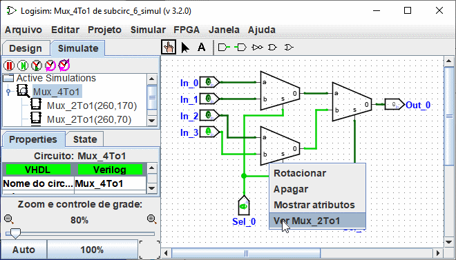

Depuração de subcircuitos
Ao testar circuitos maiores, você provavelmente encontrará bugs. Para se descobrir o que estiver acontecendo de errado, explorar o que estiver acontecendo no subcircuitos enquanto estiver testando o circuito global poderá ser bastante útil. Você poderá ver o estado do subcircuito usando três maneiras diferentes.
A mais simples provavelmente será ver a hierarquia da simulação ao clicando na guia Simulate do explorador , ou ao selecionar menu | Projeto →| Ver Simulação |. Isso alterará o painel do explorador de modo a exibir a hierarquia dos subcircuitos que estiverem sendo simulados.

Um duplo-clique em um elemento nessa hierarquia irá mostrar o que estiver acontecendo dentro desse subcircuito.
A segunda maneira pela qual você poderá entrar em um subcircuito abrir o menu pop-up do subcircuito pelo botão direito do mouse ou control-click, e escolher a opção | Cer "nome do circuito" |.

E a terceira maneira é primeiro selecionar a Ferramenta Testar e então clicar no subcircuito que desejar explorar; uma lupa irá aparecer sobre o centro do subcircuito, e um duplo-clique sobre ela irá apresentar o estado desse subcircuito.

Em qualquer uma desses casos, uma vez dentro do subcircuito, será possível ver quais os valores dos pinos no subcircuito corresponderão aos valores que estiverem sendo enviados através deles para o circuito que os contiver.

Enquanto no subcircuito, você terá permissão para alterar o circuito. Se as mudanças afetarem qualquer das saídas do subcircuito, elas serão propagadas para esse. Uma exceção: as entradas do subcircuito serão determinadas com base nos valores que entram no supercircuito, por isso não faz sentido alternar esses valores. Se você tentar introduzir uma modificação no subcircuito, uma caixa de diálogo se abrirá perguntando se o pino está ligado ao estado do supercircuito. Criar um estado novo para o circuito?
Se clicar em Não, cancelarará o pedido de alteração, se clicar em Sim irá criar uma cópia dos estados vistos, diferente do circuito externo, com o pino de entrada alterado.
Depois de ter completado a visualização e/ou edição, poderá retornar ao circuito original ao clicar duas vezes no circuito principal no painel do Explorador, ou através do submenu Ir Ao Estado do menu Simulação.
Próximo: Bibliotecas do Logisim.